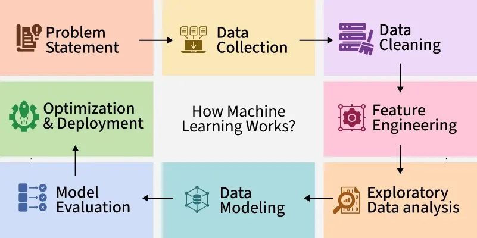

Self-Supervised Learning
Self-supervised learning is often considered as a subset of unsupervised learning, but it has grown into its own field due to its success in training large-scale models. It generates its own labels from the data, without any manual labeling.
Linear Regression
This is one of the simplest ways to predict numbers using a straight line. It helps find the relationship between input and output.
Logistic Regression
Used when the output is a "yes or no" type answer. It helps in predicting categories like pass/fail or spam/not spam.
Decision Trees
A model that makes decisions by asking a series of simple questions, like a flowchart. Easy to understand and use.
Support Vector Machines (SVM)
A bit more advanced—it tries to draw the best line (or boundary) to separate different categories of data.
k-Nearest Neighbors (k-NN)
This model looks at the closest data points (neighbors) to make predictions. Super simple and based on similarity.
Naïve Bayes
A quick and smart way to classify things based on probability. It works well for text and spam detection.
Random Forest (Bagging Algorithm)
A powerful model that builds lots of decision trees and combines them for better accuracy and stability.
Machine Learning Tutorial
Machine learning is a branch of Artificial Intelligence that focuses on developing models and algorithms that let computers learn from data without being explicitly programmed for every task. In simple words, ML teaches the systems to think and understand like humans by learning from the data.
